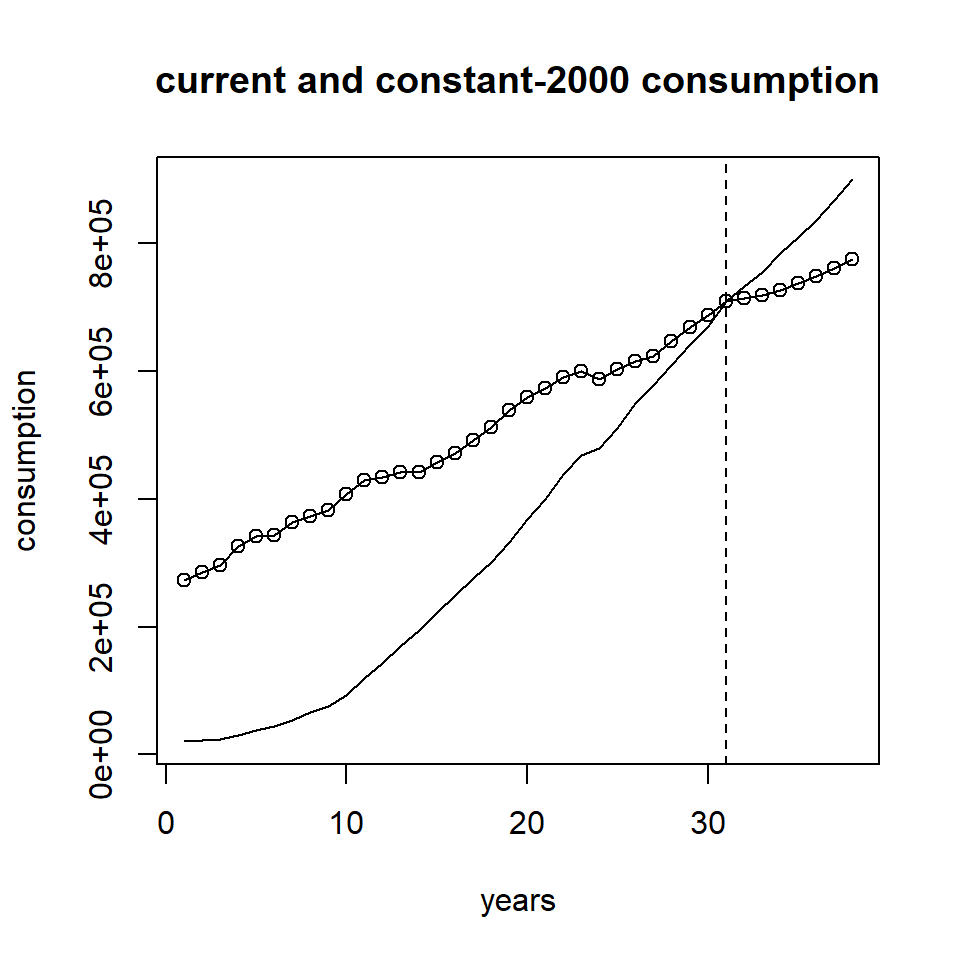
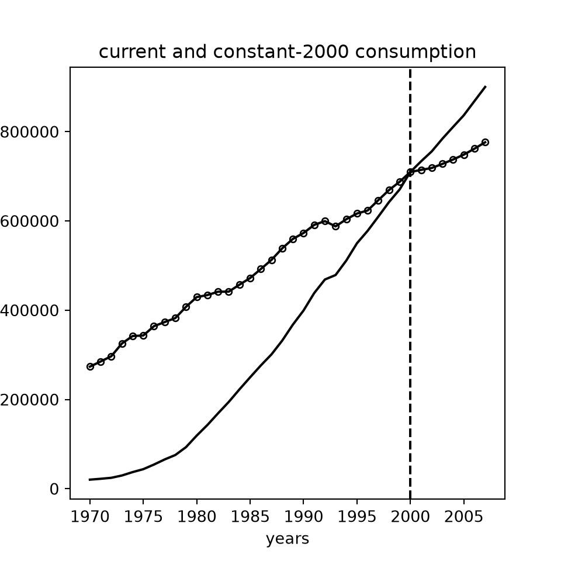
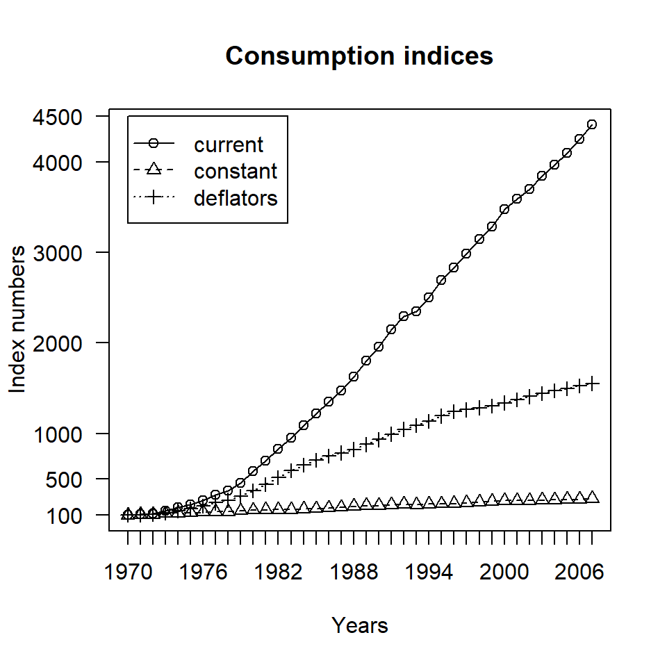
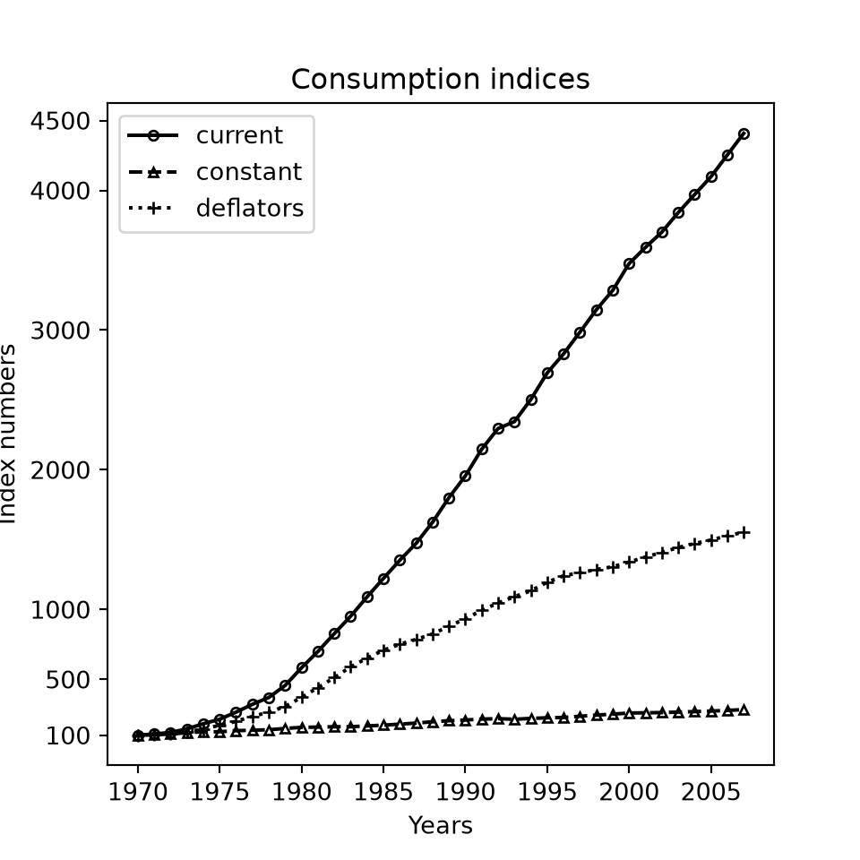

ni <- read.csv2("data/numeroindice.csv")
attach(ni)
V0=sum(p0*q0)
V1=sum(p1*q1)
V2=sum(p2*q2)
V0;V1;V2[1] 45[1] 68[1] 111Comparing aggregates over time or across space requires the quantities compared to be homogeneous: we cannot compare the price of Tuscan cigars in lire with that of another type of cigar in euro, or compare speeds in km per hour and in miles per hour. Index numbers help us compare variables because they do not depend on the unit of measurement: we say that an index number is a pure number. There are obviously many ways of building an index number; it depends on what the analyst wants to know.
Suppose we want to compare the number of crimes against the person in two cities, say A and B. City A records 30 crimes per 100 victims, the second city 60 (again per 100). Clearly A is less “dangerous” than B, if crimes are a proxy for a community’s level of safety. The first city is less dangerous by \((30/60 - 1) \cdot 100 = (0.5-1) \cdot 100 = -50\%\), that is, by half. This ratio is an index number: a pure number expressing a relative change that does not depend on the original unit of measurement. And again: by what percentage did crimes per 100 victims increase in city A if they went from 20 in 2000 to 40 in 2008? The answer is immediate: \((40/20 - 1) \cdot 100 = (2-1) \cdot 100 = +100\%\); they doubled. In this way aggregates and variables can easily be compared both across space and over time. Since the denominator of an index number is the basis of comparison, over time it is usually the earlier period, so that the change reads intuitively from the more distant period to the more recent one.
Let us continue our example by choosing a product, say pork consumed by a given household in a given area over some period. If the Rossi family bought 1 kg of meat a week last year and buys 2 kg today, then \((2/1 - 1) \cdot 100 = 100\%\) is the increase in meat consumption (assuming that the quantity bought equals actual consumption); in other words, if \(q\) is the quantity, we can write \(q_{1}/q_{0}\), where 0 and 1 denote the two time periods. Likewise, for 2008 but for two different households, we have \(q_{famiglia1}/q_{famiglia2}\). The same reasoning applies to the price of meat in two different years, or in the same year for the same two households; we then write \(p_{1}/p_{0}\) or \(p_{famiglia1}/p_{famiglia2}\). These are examples of simple index numbers, which consider a single good (or service): a simple ratio.
We may be interested not only in comparing the price or the quantity of meat bought, but also the total value of the good. We may then want to compare the Rossi family’s spending on meat in one year with the same spending in the following year. The value of this spending depends on changes in price with quantity unchanged, on changes in quantity with price unchanged, or on changes in both price and quantity. The value of a purchase is of course the unit price times the quantity bought: spending on 5 kg of meat is \(q\cdot p\), that is, 5 kg times the price of 1 kg of meat. So the value of our spending is in general
\[ V=p\cdot q \tag{3.1} \]
The comparison between two years is obtained with the usual ratio; for periods 0 and 1 we have
\[ p_{1}q_{1}/p_{0}q_{0} \tag{3.2} \]
while across space, between areas \(r\) and \(s\), we have
\[ p_{r}q_{r}/p_{s}q_{s} \tag{3.3} \]
We focus on comparisons over time, as they are more relevant to what follows; everything also holds for spatial comparisons.
Saying that the Rossi family’s weekly spending on meat went from €25 to €36 between 2007 and 2008 is of limited interest; this value grew by \((36/25-1) \cdot 100 = 44\%\). What caused the increase? Did the Rossi family decide to buy more meat at unchanged prices, did prices rise with quantities unchanged, or did both prices and quantities increase? Bearing in mind that one could have risen and the other fallen, or vice versa.
So it clearly matters to establish what drives the change in value over time (quantities and/or prices) and to what extent. If we found that prices had in fact risen and the quantity of meat bought had fallen, but not by enough to offset the first change, we would know that the Rossi family is eating less meat even though it is spending more; by contrast, the initial information that spending had risen from 25 to 36 would intuitively have led us to believe that meat consumption had increased. Changes in prices and quantities must therefore be properly separated.
To do so we define two virtual values, combining the prices and quantities of the two periods 0 and 1:
\[ V'=p_{1}q_{0} \quad \text{and} \quad V''=p_{0}q_{1} \tag{3.4} \]
Comparing period 1 with these two virtual values, we get
\[ V/V'=p_{1}q_{1}/p_{1}q_{0} \quad \text{hence} \quad V/V'=q_{1}/q_{0} \tag{3.5} \]
and
\[ V/V''=p_{1}q_{1}/p_{0}q_{1} \quad \text{hence} \quad V/V''=p_{1}/p_{0} \tag{3.6} \]
So information on the change in quantities is obtained by holding prices constant, while information on the change in prices is obtained by holding quantities constant between periods 0 and 1. The first is a quantity index, the second a price index. We can generalise this principle to composite index numbers, that is, those that consider several goods and/or services.
For \(n\) products we have
\[ I_{q}^{P}=\sum_{i=1}^{n} p_{i1}q_{i1} \Big/ \sum_{i=1}^{n} p_{i1}q_{i0} \qquad \text{(Paasche quantity index)} \tag{3.7} \]
and
\[ I_{p}^{P}=\sum_{i=1}^{n} p_{i1}q_{i1} \Big/ \sum_{i=1}^{n} p_{i0}q_{i1} \qquad \text{(Paasche price index)} \tag{3.8} \]
Note that in the first case we held prices \(p\) constant at period 1, and in the second case quantities \(q\). This configuration characterises Paasche index numbers \(I^{P}\).
In general, however, the earlier period (0 in our case) is preferred as the reference, both because older data are easier to obtain and because the index is more intuitive to build and interpret. Hence
\[ I_{q}^{L}=\sum_{i=1}^{n} p_{i0}q_{i1} \Big/ \sum_{i=1}^{n} p_{i0}q_{i0} \qquad \text{(Laspeyres quantity index)} \tag{3.9} \]
and
\[ I_{p}^{L}=\sum_{i=1}^{n} p_{i1}q_{i0} \Big/ \sum_{i=1}^{n} p_{i0}q_{i0} \qquad \text{(Laspeyres price index)} \tag{3.10} \]
Note that this time the virtual value \(V'\) or \(V''\) is in the numerator; this is the typical configuration of Laspeyres indices \(I^{L}\).
Let us focus on price indices only, which are particularly interesting because they allow useful considerations about inflation, that is, the relative change in the general price level recorded in a community over a given period.
Consider a given group of products, or a generic basket representative of the consumption spending of certain households. When prices tend to rise over a period (the usual pattern in a national economy), consumers end up replacing the goods and/or services whose prices have risen with cheaper products, buying and consuming less of the former and more of the latter. The Laspeyres price index will then tend towards higher values and the Paasche index towards lower values: we say that the first has an upward bias and the second a downward bias, since Laspeyres overstates inflation and Paasche understates it. Indeed, since a price index tracks prices through a particular weighted average with quantities as weights, it in fact measures, for the period and area considered, the general price dynamics of the basket of goods and/or services in question.
Recall that neither the product of the Laspeyres price and quantity indices nor that of the Paasche price and quantity indices gives the value index
\[ I_{v}=\sum_{i=1}^{n} p_{i1}q_{i1} \Big/ \sum_{i=1}^{n} p_{i0}q_{i0} \tag{3.11} \]
It is easy to show that only the product of the price index of one and the quantity index of the other, and vice versa, gives back the value index. Transitivity does not hold either: the price index between 0 and \(n\) is not equal to the combination of those between 0 and \(t\) and between \(t\) and \(n\), with \(t<n\). Simple index numbers, by contrast, have these properties too. Using a third index, the Fisher index, at least removes the bias of Laspeyres and Paasche by taking their geometric mean
\[ I_{p}^{F}=(I_{p}^{L}\cdot I_{p}^{P})^{1/2} \quad \text{and} \quad I_{q}^{F}=(I_{q}^{L}\cdot I_{q}^{P})^{1/2} \tag{3.12} \]
The Fisher index also solves the problem of recovering the value index, since
\[ I_{v}^{F}=I_{p}^{F}\cdot I_{q}^{F} \tag{3.13} \]
The main drawback is the computational effort and the amount of information required, since both Laspeyres and Paasche must be computed, and then their geometric mean.
ISTAT, like most national statistical institutes, prefers the Laspeyres index which, recall, does not in theory satisfy the transitivity (or circularity) property. Note, however, that since 2005 ISTAT has adopted chain index numbers, in line with new European directives. This implies continually updating the reference year and abandoning the old fixed-base index. In other words, each year a new price index based on the previous year is built and, through chain-linking, the index between, say, period 1 and period 3 is obtained as the product of the indices between periods 1 and 2 and between 2 and 3. In general terms,
\[ {}_{0}I_{t}={}_{0}I_{r}\cdot{}_{r}I_{s}\cdot{}_{s}I_{t} \qquad \text{with } r<s<t \tag{3.14} \]
Of course the corresponding fixed-base index between periods 1 and 3 will not coincide with the chain-linked one, but this is no longer a concern; in this way the lack of transitivity of the index loses its significance.
Let us load the made-up data of Table 3.1, contained in the file numeroindice.csv, which refer to prices in euro and quantities in units of four goods in three arbitrary years.
| p0 | q0 | p1 | q1 | p2 | q2 | |
|---|---|---|---|---|---|---|
| a | 2 | 4 | 3 | 5 | 5 | 5 |
| b | 3 | 6 | 3 | 6 | 6 | 5 |
| c | 2 | 5 | 5 | 4 | 7 | 6 |
| d | 3 | 3 | 3 | 5 | 2 | 7 |
The command V0=sum(p0*q0) computes the value at period 0; the same is done for periods 1 and 2. Note the use of = instead of the traditional assignment <-, and of ; to display the results compactly.
proc import datafile="data/numeroindice.csv" out=ni dbms=dlm replace;
delimiter=";"; getnames=yes;
run;
/* aggregate values are sums of products */
proc sql;
create table valori as
select sum(p0*q0) as V0, sum(p1*q1) as V1, sum(p2*q2) as V2,
sum(p0*q1) as V01, sum(p1*q0) as V10
from ni;
quit;
proc print data=valori noobs; var V0 V1 V2; run;Let us look at the changes in value over time.
From period 0 to period 1 the value of the purchase grew from €45 to €68, an increase of about 51%, and by as much as 63% between periods 1 and 2; these are the value index numbers at periods 1 and 2.
Let us build Laspeyres and Paasche price and quantity indices with base 100. Note the last instruction, which displays the rounded values, with no decimals, on a single line.
So between periods 0 and 1, against a 51% increase in value, prices rose by 42% according to Laspeyres and by 33% according to Paasche; quantities rose by 13% and 6% respectively for the two types of index. In practice, the differences between Laspeyres and Paasche are not as large as this example suggests. Recovering the value index is immediate.
Building the Fisher price, quantity and value indices is simple.
Repeating the calculations for the interval between years 1 and 2 is left to the reader.
Note also that the chain-linked Laspeyres price index between the first (0) and the last (2) year shows an increase of 107%, against 116% from the direct calculation. Again, the large difference is due to the peculiarity of the example since, in practice, the chain index is never very far from the directly computed one.
IpL01 = (p1 * q0).sum() / (p0 * q0).sum() # Laspeyres between 0 and 1
IpL12 = (p2 * q1).sum() / (p1 * q1).sum() # Laspeyres between 1 and 2
IpL02 = (p2 * q0).sum() / (p0 * q0).sum() # direct Laspeyres between 0 and 2
print("chained:", round((IpL01 * IpL12 - 1) * 100), " direct:", round((IpL02 - 1) * 100))chained: 107 direct: 116ISTAT publishes price data monthly, both as year-on-year and as month-on-month changes. In February 2009 the national consumer price index for the whole population (NIC), including tobacco, stood at 137.0 (base 1995=100), up 0.2% on January 2009 (month-on-month change) and 1.6% on the same month of the previous year (year-on-year change): this is a measure of inflation for February 2009 over February 2008. If instead we looked at the FOI index (see below) with data updated to 2018, we would see an index of 102.9 in August 2018 against a base of 100 in 2015: an increase of 2.9% over the base period. Returning to the NIC in our historical assessment, the international crisis, which squeezed consumption and production, together with the substantial fall in energy commodity prices, led to a marked slowdown in the growth of all prices: over 2008 (compared with 2007) average annual inflation was 3.3%, peaking at 4% in the third quarter alone. Interestingly, in recent years price growth has been more moderate; for example, the year-on-year NIC figure for September 2018 shows annual growth of 1.5% (slightly below the 1.6% recorded in August 2018).
Knowing how prices evolve is particularly useful so as not to confuse changes in an aggregate with its real changes, where “real” here means net of the effect of prices. Suppose we want to study spending on bread in a neighbourhood of Palermo between 2007 and 2008: €10,000 in the first year and €12,000 in the second, an increase of 20%. But how much of this increase is due to prices? If we found that bread prices fully accounted for the increase in spending, we could conclude that people in the neighbourhood did not in fact eat more bread. We might even suppose that higher prices offset a fall in the quantities sold, so that the increase in spending hides a fall in real terms in the bread sold.
So, to interpret the data correctly, price effects must be stripped out, even though end users almost never have adequate information for individual products or product types; in most cases, with some important exceptions, a measure valid for prices as a whole has to suffice. This is the route usually followed to remove the effect of prices and obtain an aggregate in real terms.
In particular, besides the NIC, ISTAT computes a consumer price index for blue- and white-collar worker households (FOI); the FOI excluding tobacco is used to index rents, maintenance payments, etc. In February 2009 this index stood at 134.5 (base 1995=100), up 1.5% year on year on February 2008, while the annual index for 2007 and 2008 was 130.0 and 134.2 respectively, an increase of 3.23%. So, for a given amount of money, purchasing power fell by about 3% between 2007 and 2008. Similar considerations apply to more recent data.
We can now work out how much the value of, say, €1000 fell because of price erosion between 2007 and 2008. The 2008 index relative to 2007 (that is, rebased to 2007) is \((134.2/130.0) \cdot 100 = 103.23\); so \((1000 / 103.23) \cdot 100 = 968.70\) euro is what “really” remains of the initial €1000. More simply, \(1000 / (1 + 3.23\%) = 1000 / (1 + 0.0323) = 968.70\). By the same reasoning, to find the value of €1000 of 2008 in terms of 2007, we simply multiply 1000 by \((1+0.0323)\), that is, by the coefficient 1.0323 known as the “monetary revaluation coefficient”.
Table 3.2 reports the revaluation coefficients for some years; the longer series is in the file rivalutazione.csv.
| Year | Revaluation coeff. | Year | Revaluation coeff. | Year | Revaluation coeff. |
|---|---|---|---|---|---|
| 1861 | 8513.9146 | 1938 | 1606.0294 | 2001 | 1.1659 |
| 1862 | 8462.3152 | 1939 | 1538.0943 | 2002 | 1.1383 |
| 1863 | 8715.8677 | 1940 | 1317.9932 | 2003 | 1.1109 |
| 1864 | 8962.0154 | 1941 | 1139.0782 | 2004 | 1.0893 |
| 1865 | 9114.1123 | 1942 | 985.5181 | 2005 | 1.0710 |
| 1866 | 9019.9096 | 1943 | 587.6608 | 2006 | 1.0501 |
| 1867 | 8803.7957 | 1944 | 132.2387 | 2007 | 1.0323 |
| 1868 | 8462.3152 | 1945 | 67.1419 | 2008 | 1.0000 |
In essence, if we could travel back in time, one euro of 2008 would have had the purchasing power of about 8,514 euro in 1861, or of 67 euro in 1945; of course the coefficient equals 1 in 2008, the reference base of the whole series.
Revaluation coefficients are useful for deflating aggregates, removing from them the effect of prices as measured by the FOI index excluding tobacco. Although for simplicity these coefficients are used for most aggregates expressed in money terms, it would be logically correct to restrict their use to consumption items, using specific indices or deflators for the other demand items, and others still for supply and production items; for example, a specific implicit deflator is available for GDP.
Let us load the data in rivalutazione.csv, giving the resulting vector names (the years) so that the coefficient for the years of interest, 2007 and 2008 in the example, can be found easily.
Take national consumption \(C\) from Table 2.2 (see Chapter 2): €1,210,281 million at current prices (that is, not deflated) in 2007, which would correspond to consumption of 1,249,373 at 2008 prices.
The file rivalutazione.csv also contains the national series of consumption spending by resident households, in € million at current prices, from 1970 to 2007. Using the coefficients coff, we deflate this spending at 2000 prices; we must therefore first change the base from 2008 to 2000.
Spending of €900,282 million in 2007 becomes, in real terms, €776,344 million at 2000 prices; the difference, about 16%, is explained by price changes between 2000 and 2007.
Of course, changing the base affects the level of consumption only in absolute terms, so the growth rate of the real aggregate between any two years does not depend on the base chosen for deflation: we always get a change of +183.7% over the whole period 1970-2007, whatever base year is chosen for the constant-price valuation.
Figure 3.1 compares current and deflated (base 2000) spending over 1970-2007. Note the use of the plotting functions plot(), lines() and abline(), and of complete.cases(), which here removes the missing data before 1970 and after 2007.

import matplotlib.pyplot as plt
cons2000 = cons00.dropna()
conscorr = cons.dropna()
plt.figure(figsize=(5, 5))
plt.plot(conscorr.index, conscorr, "-", color="black")
plt.plot(cons2000.index, cons2000, "o-", color="black", markerfacecolor="none", markersize=4)
plt.axvline(2000, linestyle="--", color="black")
plt.xlabel("years"); plt.ylabel("consumption")
plt.title("current and constant-2000 consumption")
plt.show()
proc sgplot data=rival;
where 1970 <= anni <= 2007;
title "current and constant-2000 consumption";
series x=anni y=consfam / lineattrs=(pattern=solid color=black) legendlabel="current";
series x=anni y=cons00 / markers lineattrs=(color=black) legendlabel="constant 2000";
refline 2000 / axis=x lineattrs=(pattern=dash);
xaxis label="years"; yaxis label="consumption";
run;In Figure 3.1 current consumption spending is shown by a solid line and spending deflated at 2000 prices by a dotted line; the two cross in the 31st year of the series, 2000, when current and constant values coincide. Before the base year the current series lies below the constant one, and after it above: prices before 2000 are lower, and prices after 2000 higher, than in the base period (over time prices always rise, albeit at different speeds).
For a better graphical representation of current consumption, real consumption and prices, we build three fixed-base index series (1970=100) and plot them with some drawing options that the reader can explore as an exercise (Figure 3.2); note that we asked R not to use its default plot layout, so that the user can customise it.
NIconscorr <- conscorr/conscorr["1970"]*100
NIcons2000 <- cons2000/cons2000["1970"]*100
deflatori <- conscorr/cons2000
NIdeflatori <-
deflatori/deflatori["1970"]*100
plot(NIconscorr, pch=1, type="o",
lty=1, axes=FALSE, ann=FALSE)
lines(NIcons2000, pch=2, type="o", lty=2)
lines(NIdeflatori, pch=3, type="o", lty=3)
axis(1, at=1:38, lab=c(1970:2007))
axis(2, las=1, at=c(100,500,1000,2000,3000,4000,4500))
box()
title(main="Consumption indices", xlab="Years", ylab="Index numbers")
legend(1, 4500, c("current","constant",
"deflators"), pch=1:3, lty=1:3)
NIconscorr = conscorr / conscorr[1970] * 100
NIcons2000 = cons2000 / cons2000[1970] * 100
deflatori = conscorr / cons2000
NIdeflatori = deflatori / deflatori[1970] * 100
plt.figure(figsize=(5, 5))
plt.plot(NIconscorr.index, NIconscorr, "o-", color="black", markerfacecolor="none", markersize=4, label="current")
plt.plot(NIcons2000.index, NIcons2000, "^--", color="black", markerfacecolor="none", markersize=4, label="constant")
plt.plot(NIdeflatori.index, NIdeflatori, "+:", color="black", markersize=5, label="deflators")
_ = plt.yticks([100, 500, 1000, 2000, 3000, 4000, 4500])
plt.title("Consumption indices"); plt.xlabel("Years"); plt.ylabel("Index numbers")
/* index numbers, 1970=100 */
data ni_cons;
set rival;
where 1970 <= anni <= 2007;
retain base_corr base_cost base_defl;
deflatori = consfam / cons00;
if anni = 1970 then do;
base_corr = consfam; base_cost = cons00; base_defl = deflatori;
end;
NIconscorr = consfam / base_corr * 100;
NIcons2000 = cons00 / base_cost * 100;
NIdeflatori = deflatori / base_defl * 100;
run;
proc sgplot data=ni_cons;
title "Consumption indices";
series x=anni y=NIconscorr / markers lineattrs=(pattern=solid) legendlabel="current";
series x=anni y=NIcons2000 / markers lineattrs=(pattern=dash) legendlabel="constant";
series x=anni y=NIdeflatori / markers lineattrs=(pattern=dot) legendlabel="deflators";
xaxis label="Years"; yaxis label="Index numbers" values=(100 500 1000 2000 3000 4000 4500);
run;